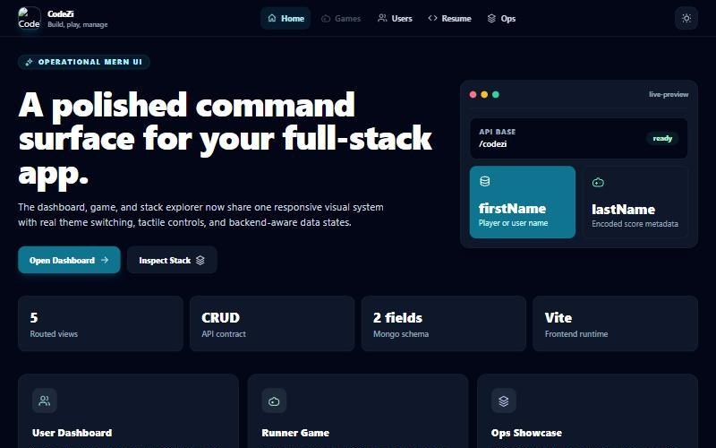
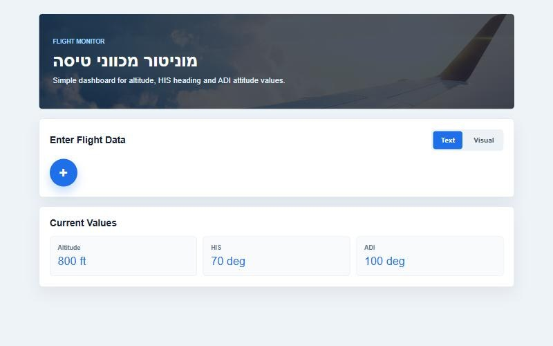
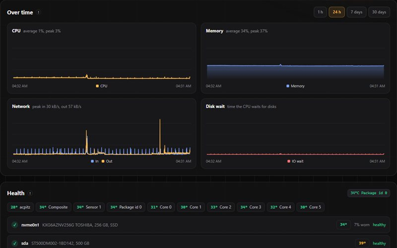
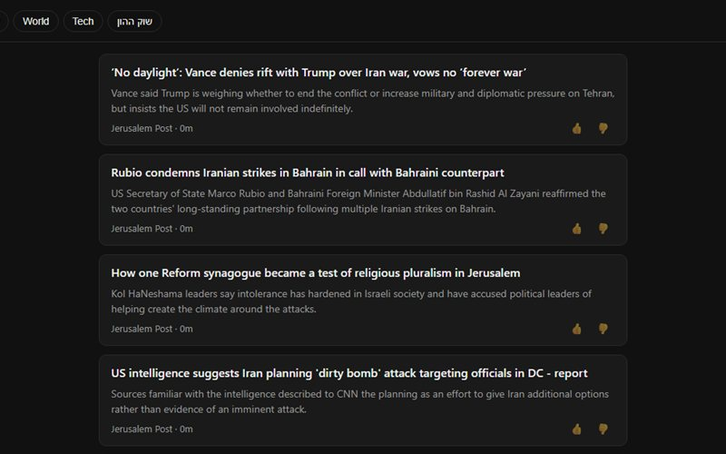
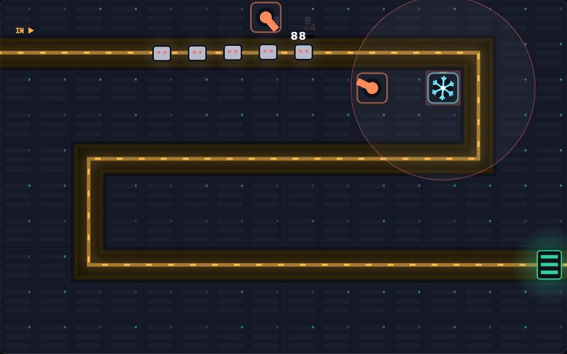

מעבד
24 שעות אחרונותטוען נתונים חיים…
אני אברהם ארזי, הנדסאי תוכנה. האתר הזה וכל הפרויקטים שבו רצים משרת Proxmox שעומד אצלי בבית.
whoami
אברהם ארזי. מפתח Full-Stack, הנדסאי תוכנה.
cat looking-for.txt
מחפש תפקיד של מהנדס תוכנה או מפתח Full-Stack.
JavaScript, React, Node.js, Express, MongoDB, Java.
ls projects/
codezi/ flight-monitor/ homelab-dashboard/ news-reader/ homelab-defender/
שרת Proxmox עם קונטיינר לכל אפליקציה, reverse proxy מלפנים, מסד נתונים משותף מאחור, ודשבורד שכתבתי כדי לנהל את כל זה. המספרים כאן אמיתיים ועדכניים.
טוען נתונים חיים…
טוען נתונים חיים…
טוען נתונים חיים…
טוען נתונים חיים…
טוען נתונים חיים…
תריסר קונטיינרי LXC על שרת Proxmox אחד עם 16GB זיכרון, לכל אחד תפקיד וכתובת סטטית משלו.
GitHub Actions עם runners עצמאיים בתוך הקונטיינרים. פוש ל-main מעלה את האפליקציה לאוויר.
כל אתר נבדק אחת לדקה, תקלה שולחת התראה לטלפון שלי, ולפני כל שינוי נלקח snapshot של הקונטיינר.
כל אחד מהם חי על השרת שלמעלה. תפתחו, תנסו לשבור, תקראו את הקוד.




שואב תריסר פידים ולומד מה מעניין אותי לפי לייק או דיסלייק, ואז מדרג לשונית "בשבילך".

משחק הגנת מגדלים על הגנה על ארון שרתים: 5 מגדלים, 6 סוגי אויבים, 3 מפות, 20 גלים ומצב אינסופי. מודולי JavaScript פשוטים, בלי ספריות, ומשחקים גם בטלפון.
מפתח Full-Stack שבונה אתרים שלמים, מצד הלקוח דרך השרת ועד מסד הנתונים. חשובה לי לוגיקה נקייה, וגם האבטחה והפריסה של המערכת.
לקורות החיים המלאים